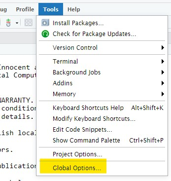
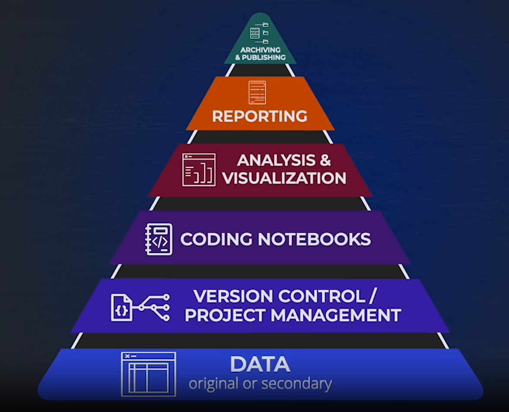

Projects
RStudio Projects1
R is a coding language interpreter. RStudio is an Integrated Development Environment (IDE) used to make it easier to interact with the coding language.
The projects feature of R is useful for keeping project and ideas discrete. Using the project feature helps us set-up and maintain an reproducible workflow, makes it easier to share our code with others, and enables good coding hygiene, such as using relative file paths
How to…
{kind=link}
- Look in the upper-right corner of your RStudio IDE. Or,
File > New Projects - Choose between New, Existing, or Version Control.
- If you choose a New project, there are several options for project types. I recommend starting with Quarto Project2
{kind=link}
{kind=link}
By clicking the upper-right hand corner of your project name, you’ll be able to easily switch between projects.
Settings in RStudio preferences
Further recommendations on reproducibility suggest setting the following global preferences
{kind=link}
{kind=link}
 Global options" width="200">
{kind=link}
Uncheck
- Restore most recently opened project (uncheck)
- Restore previously open source document (uncheck)
- Restore .Rdata (uncheck)
- Save workspace to .RData to NEVER
- Always save history (uncheck)
Reproducibility
Reproducibility is an that supports from compuational thinking by ensuring all documents, analysis, data, and code are readily available so that the computations can be executed and re-executed to achieve identical results3

Two fot he most basic principle in reproducibility are…
- Do everything with code
- Render documents from code
Developing computation techniques to honor these principles means, whenever possible, reduce or eliminate mouse-clicks, copy/paste steps, and other computational actions. Among other reasons, we do this because such actions are hard to document for ourselves and others.
In this way, using a coding language such as R along with a reproducible publishing scheme such as Quarto, while also incorporating literate coding(Knuth 1984), tidy data(Wickham 2014), and and tidyverse principles(Wickham et al. 2019) is an ideal way to ensure not only the reproducibility of your analysis.
Building on these strong foundations increases the chances of archiving your work for posterity. We have learned this by looking back at the computational workflows of the nineteen seventies through the early two-thousands. Many, if not most of which can no longer be reproduced without excessive retrofitting expense.
Archiving dependencies with {renv}
“The renv package helps you create reproducible environments for your R projects.” {renv}
The
renvpackage is a new effort to bring project-local R dependency management to your projects. The goal is forrenvto be a robust, stable replacement for the Packrat package, with fewer surprises and better default behaviors. — Introduction to renv / Kevin Ushey